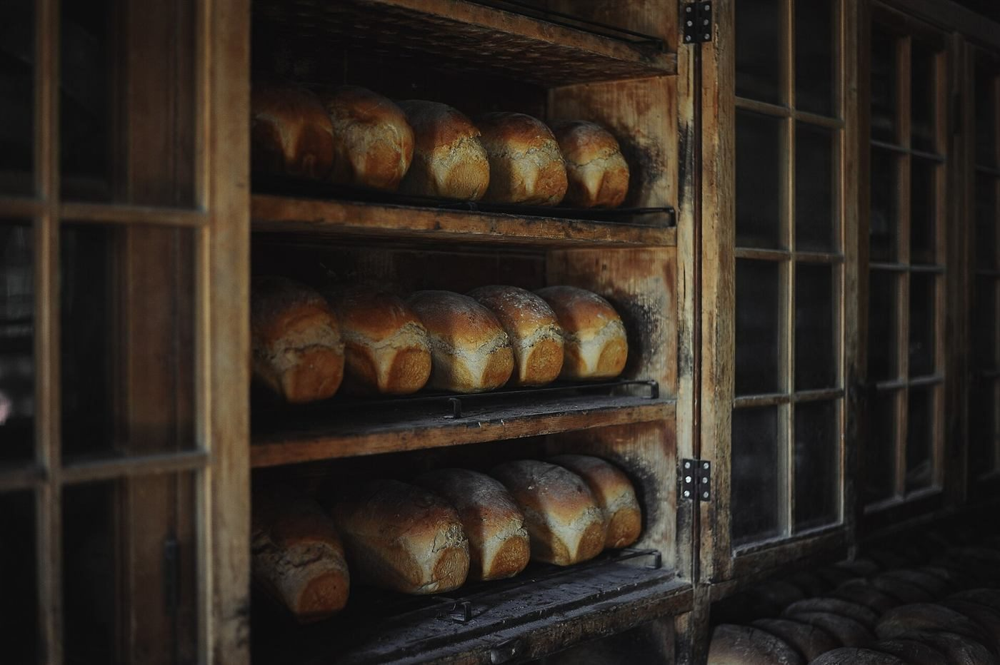

メニュー
お品書きは準備中
メニューと価格は、確認でき次第お知らせします。下の欄はまだ空です。
お品書き
六つの空欄
1欄1準備中
2欄2準備中
3欄3準備中
4欄4準備中
5欄5準備中
6欄6準備中
| メニュー | 準備中 |
|---|---|
| 価格 | 準備中 |
| ご予約 | 準備中 |
写真(イメージ)
パンの写真


写真はパンのイメージです。お店のメニューを示すものではありません。
写真(イメージ)
ねじりパンと棚のパン


写真はイメージです。お店のメニューや設備を示すものではありません。
メニュー
メニューと価格は、確認でき次第お知らせします。下の欄はまだ空です。
お品書き
| メニュー | 準備中 |
|---|---|
| 価格 | 準備中 |
| ご予約 | 準備中 |
写真(イメージ)
写真はパンのイメージです。お店のメニューを示すものではありません。
写真(イメージ)

写真はイメージです。お店のメニューや設備を示すものではありません。